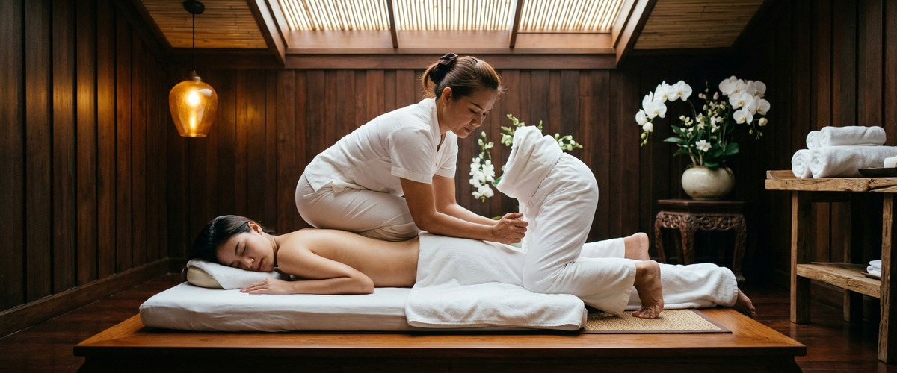
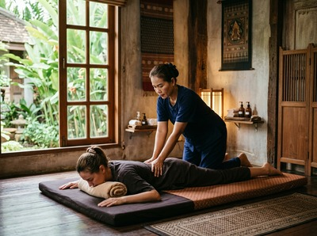

If you've ever wondered what Thai massage actually involves, you're not alone.

A lot of people assume it's just a relaxing rub-down with oil, like a standard spa treatment. It isn't. Thai massage is a full-body practice that combines acupressure, assisted stretching, and rhythmic compression along the body's energy pathways. The result feels closer to a cross between a deep massage and a yoga session — and for most people who try it, it's unlike anything they've experienced before. At Glasgow Thai Massage, this is exactly what we practise — rooted in tradition, delivered with genuine skill.
Thai massage has a history stretching back over 2,500 years. It traces to ancient India, where a physician named Jivaka Kumar Bhaccha — a contemporary of the Buddha and regarded as the father of Thai medicine — developed early bodywork techniques based on Ayurvedic ideas. These practices travelled through Southeast Asia with Buddhist monks and took root in Thailand, refined over centuries in temple traditions.

The most respected centre for traditional Thai massage study is Wat Pho in Bangkok. Glasgow Thai Massage founder Maliwan trained there, bringing over 20 years of hands-on practice and a direct link to the source. That heritage shapes every session at the studio on West Nile Street.
Thai massage works along what are called sen energy lines — pathways running through the body that, in traditional Thai medicine, govern energy flow, circulation, and physical function. There are 10 primary sen lines. A skilled practitioner uses thumb pressure, palming, elbow work, and assisted stretching to release tension and restore balance along them.
Unlike a Swedish or Thai oil massage, traditional Thai massage is done fully clothed on a floor mat. No oils are used. Instead, the therapist uses body weight and leverage to apply pressure and guide the client through stretches that target the hips, spine, shoulders, and legs.
Many clients describe these stretches as deeply releasing in ways that are felt straight away. You can book a session online and experience the difference for yourself.
You arrive, change into loose comfortable clothing, and lie on a low mat. Your therapist begins working from your feet upward. The pressure is firm but responsive — a good Thai massage therapist listens with their hands and adjusts as they go.
The assisted stretches can feel intense if your body holds a lot of tightness, but they should never be painful. You'll likely notice areas you didn't realise were tense. By the end, most people feel both relaxed and energised, with a clear improvement in how freely they can move.
Thai massage isn't just about relaxation, though that's certainly part of it. Regular sessions can make a real difference to a range of physical and mental concerns:
It helps to know how traditional Thai massage compares to other options. Thai oil massage uses warm oils and gliding strokes for a softer, more nurturing feel. Thai sports massage focuses on recovery, injury prevention, and specific muscle groups.
Traditional Thai massage is the most whole-body of all of these. It works the body as a system, not just a set of separate problems. That's what makes it genuinely different — and genuinely worth trying.
If you've been curious about Thai massage for a while, the best thing to do is simply experience it. You can book your appointment online at Glasgow Thai Massage, located in Victoria Chambers on West Nile Street, right in the heart of Glasgow City Centre.
No. Traditional Thai massage is done fully clothed on a floor mat. You'll be asked to wear loose, comfortable clothing that allows free movement. No oils are used. If you book a Thai oil massage, you will undress to underwear, but privacy is maintained throughout with draping towels.
Thai massage can feel intense, especially if you carry a lot of muscle tension or have limited flexibility. A skilled therapist will always work within your comfort level and adjust pressure on request. Any sensation should feel purposeful and releasing — not sharp or uncomfortable. Always let your therapist know how you're feeling during the session.
Traditional Thai massage uses acupressure, rhythmic compression, and assisted stretching rather than the gliding strokes of a Swedish or oil massage. It works along sen energy lines and treats the whole body as a system rather than just specific areas. Many clients describe it as feeling like a guided yoga session combined with deep bodywork.
For general wellbeing and stress relief, once or twice a month is enough for most people to notice a lasting difference. If you're dealing with something specific — like chronic back pain or tight hips from sport — a regular course of sessions over several weeks tends to work better. Your therapist can advise after your first session.
Thai massage suits most adults, including those who've never had a massage before. It works especially well for office workers with desk-related tension, athletes looking for recovery support, and anyone dealing with stress, poor sleep, or low energy. If you have a health condition, injury, or are pregnant, let us know when booking so we can suggest the right treatment for you.